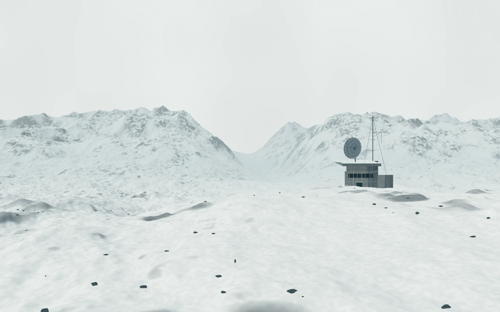
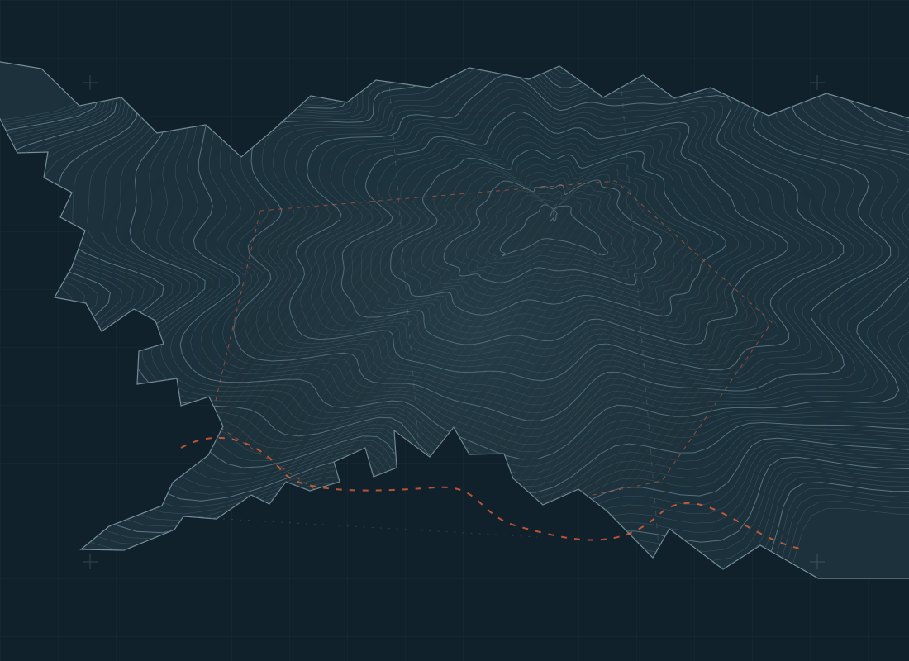

EPUN 战档司 / 2031.09.24北境封锁区 /// 访问等级 L3
ALPHA ZONE™
此处无未来A world abandoned.2031
61°02′15″N
150°36′18″W核爆记录坐标 / D-E1187
150°36′18″W核爆记录坐标 / D-E1187
!越过封锁线，即视为接受「无救援协议」。NO RESCUE BEYOND THIS POINT
+ 来自黑域的记录 EPUN / L3
不是末日。
是被遗弃之后。
THE WORLD MOVED ON.
YOU DIDN’T.
2028 年，一道核闪抹去了北境的防线。
三年后，这片土地被从世界的未来里删除。
没有政府，没有援军，也没有安全区。只有极寒、核废墟，以及一百多支为了下一口干净的水而开火的武装。
DeWorld 潜入了地下。EPUN 留在了边界。
剩下的人，把活到明天当作唯一的立场。
104支流民武装2030 年战档记录
1,842起有记录交火过去 12 个月
0公里推进「雪杉行动」72 小时
开火优先于说话。
沉默优先于呼救。
+ 封锁区域 地表情报 / 部分缺失
地图还在。
秩序已经不在。
选择一个信号节点。
看清这片土地留下了什么。

ALPHA EXCLUSION ZONE北 ↑
白令海
ALPHA
ZONE
ZONE
世界观示意 / 非精确地理边界0 ━━━━━ 200 km
已知事件节点 EPUN 封锁线 未确认区域地下井网位置仅为示意，准确坐标未知。
+ 战争档案 2025—2031 / 完整广播版
一场被写进
财报的末日。
从一笔债务，到一片黑域。
21 份记录，没有一份能改变结局。
原始战档与同期播报均按世界观原稿收录；记录中的矛盾与偏差未作改写。
+ EPUN 残存低频信道
如果你听见，
不要回答。
光纤已经沉默。
「雪鸦」还在重复世界最后的消息。
雪鸦Snow Raven receiver
待机档案频道 03087.6kHz
2028.08.05历史广播 / 非实时信号
接收文本
EPUN / 战档司2031.09.24 — 06:00档案结束 / 黑域仍在
他们说，此处无未来。